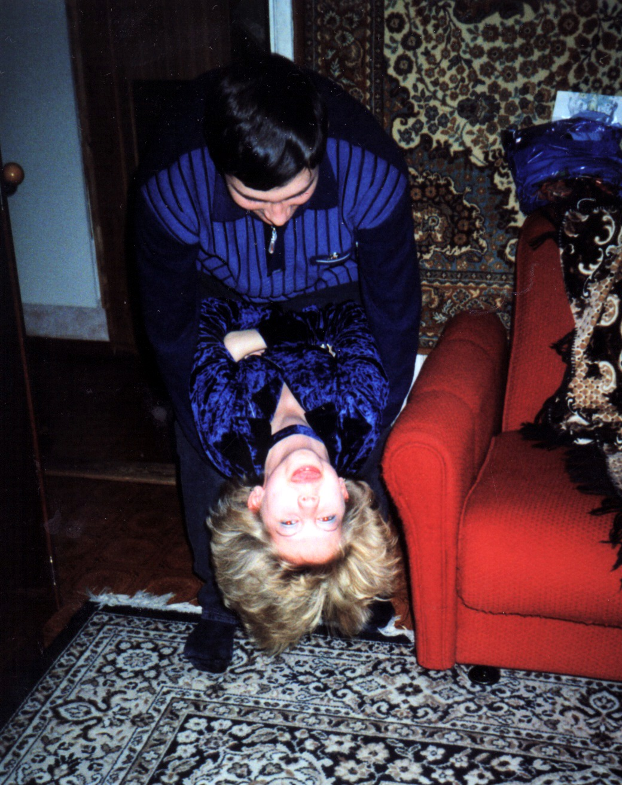
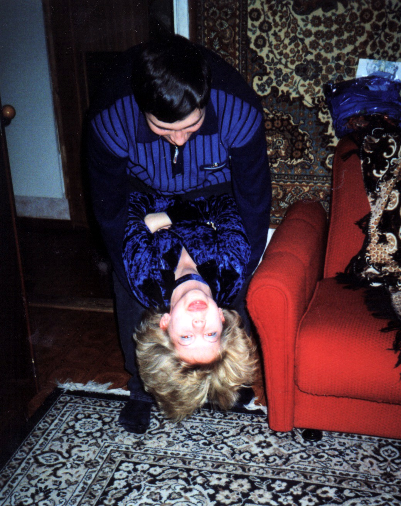

19 декабря 2000 года. День рождения Алены Раб.
[Полина Шевелёва]
"Вот смотрю на это фото и ощущаю мягкое покалывание моих рук кофточкой Полины, чувствую запах её духов, тепло её тела и вспоминаю то чувство АБСОЛЮТНОГО СЧАСТЬЯ. Ради такого момента стоит жить, даже если испыть подобного более не суждено!"
[Владислав Квашнин]